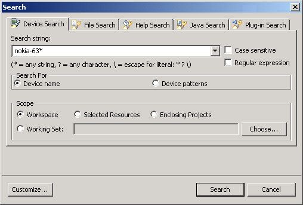
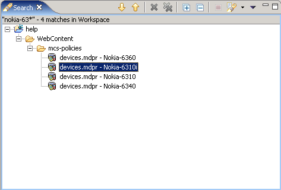

The Search view is a workbench feature that you can use to locate a wide range of information in your project files. MCS makes use of the general search features to help you quickly locate device information in the Device Repository. When you open the Search dialog you can use the Device Search tab to enter the search details.
You can search for devices by name or for values in both primary and secondary device patterns, using either the Device name or Device patterns options.
Searching for devices

The search string that you enter can contain wildcard characters. You use * for any string, for example */UAProfile/* will return all patterns containing /UAProfile/. You can also use ? for any single character, for example nokia?7??? will find Nokia series 7000 device names. If necessary you can use \ to escape a wildcard character in a name or pattern.
There are options for case sensitive searching, and using regular expression syntax (in which case wildcards won't work).
When the search is complete, MCS displays the results in the Search view, and you can work with the results list to show device information in the Device Editor.
Search view with device listing

Related topics
Device Repository editor
Searching a device repository
MCS views